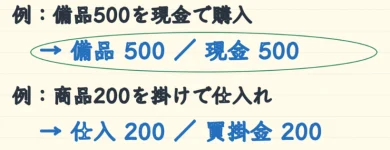
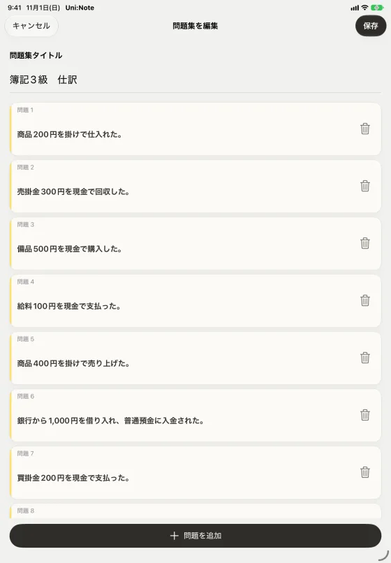
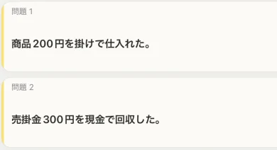
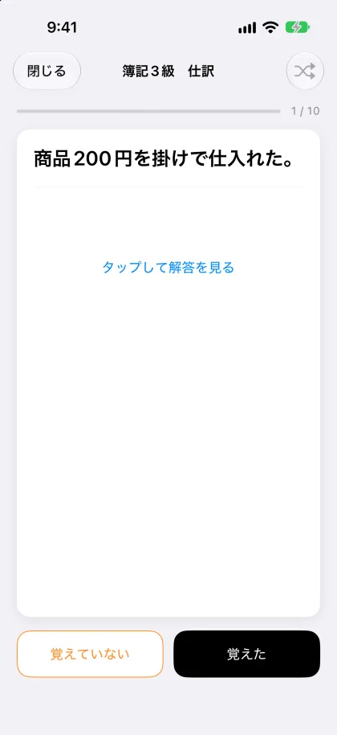
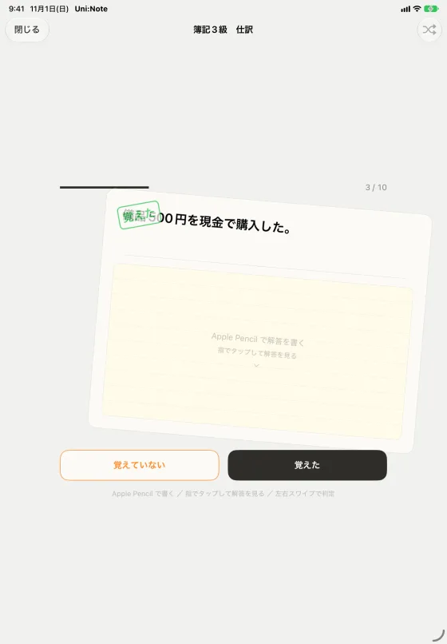
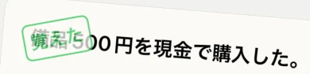
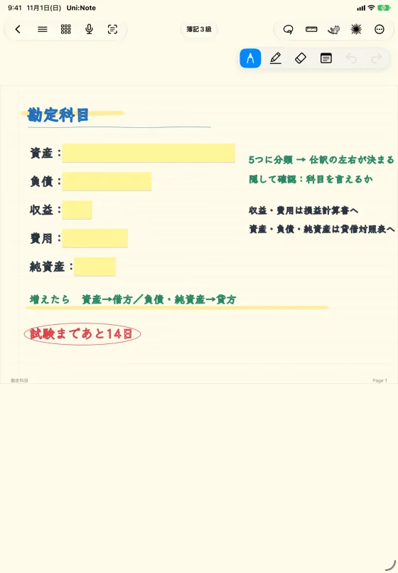
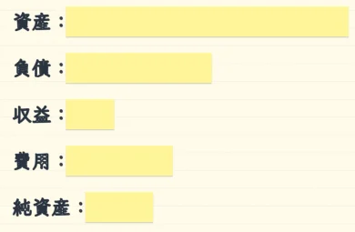
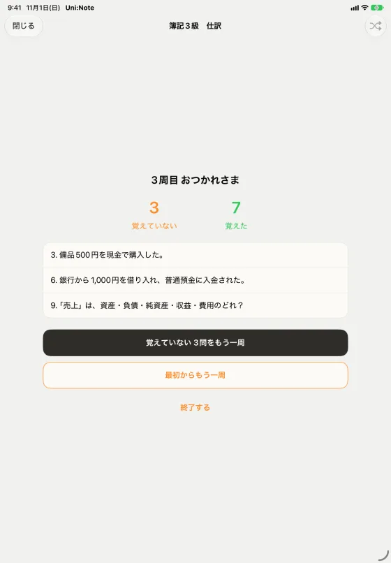
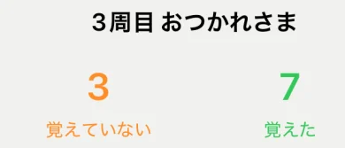

働きながらの資格勉強を、すき間時間で。
テキストの要点をノートにまとめて、問題集で覚える。

人物像会社員3年目。仕事のあとと通勤時間で、簿記3級の合格をめざしている。
- 21:00帰宅後

- 21:30


- 翌朝 7:50通勤電車

- 12:30昼休み


- 週末


- 試験1週間前


TOEICや検定の単語・用語の暗記にも、同じ使い方ができます。
おすすめ設定
| 設定の場所 | 設定項目 | おすすめ |
|---|---|---|
| 設定 › 表示設定 | 本棚の項目の呼び方 | 教科（例: 簿記3級） |
| 設定 › 学習支援 | ホームに問題集を表示 | オン |
| 設定 › 学習支援 | ホームに時間割を表示 | オフ |
| 設定 › 表示設定 | 起動時に開く画面 | 前回のノートを開く |
設定はいつでも戻せます。